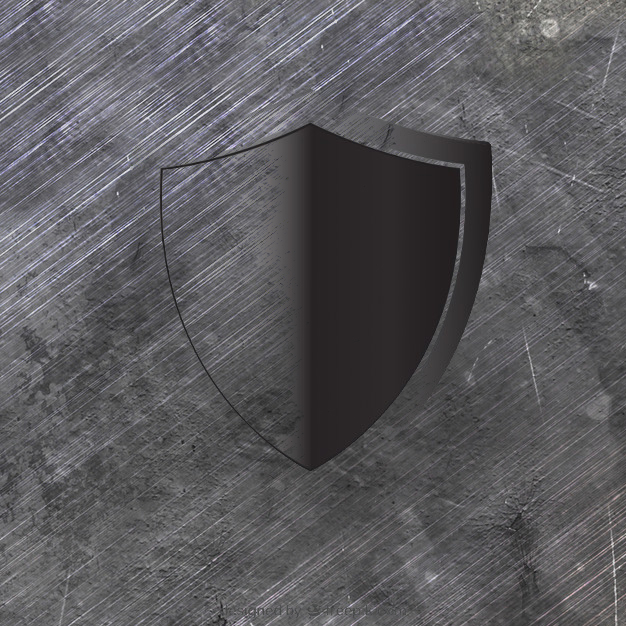
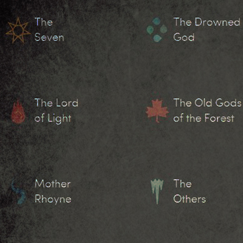
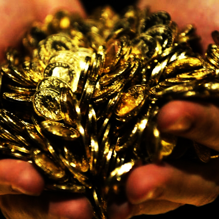

LOCALISATION (TOP SECRET)

Port-Réal est la capitale du royaume des Sept Couronnes. La ville est constituée d'un ensemble hétéroclite de bâtiments de bois, de brique et de pierre séparés par de grandes avenues boisées et de ruelles étroites. On y trouve un grand nombre de boutiques, d'auberges, de tavernes, de bordels et de cimetières. Sa population totale est estimée à près de quatre-cent mille habitants.

Les murailles de la ville sont percées de sept portes principales, chacune sous la garde d'un capitaine du guet:
- la porte de Fer, au nord-est,
- la porte du Dragon, au nord ;
- la Vieille Porte, au nord-ouest ;
- la porte des Dieux, à l'ouest, la plus imposante ;
- la porte du Lion, au sud-ouest ;
- la porte du Roi, au sud ;
- la porte de la Rivière (dite de la Gadoue), au sud-est
Il existe de nombreuses organisations au sein du royaume de Sept Couronnes. Parmi elles l'une des plus vieilles et des plus connues : la Garde de Nuit. Il s'agit d'un ordre militaire fondé pendant le l'Âge des Héros en charge des défenses du Mur du Nord contre les invasions Sauvageonnes. Leur siège est à Châteaunoir et ses membres sont toujours vêtus de noir. L'âge d'or de la Garde de Nuit a pris fin avec l'arrêt des invasions des Marcheurs Blancs ; et ils sont aujourd'hui en partie négligés par le reste du royaume puisque la menace venue du nord est devenue une légende. Ceux qui prêtent serment et revêtent à présent l'habit noir sont en majorité des repris de justice, des bâtards et des marginaux. Quelques familles nobles du Nord ont gardé en mémoire l'importance de la Garde de Nuit mais c'est une organisation en plein déclin. Tout le savoir des Sept Couronne est transmis par l'Ordre des Mestres (Maesters). Leur siège est dans l'une des plus anciennes cité du royaume : le port de Villevieille (Oldtown) dans le Bief The Reach). Il s'agit de la célèbre Citadelle. Ses membres y sont formés à devenir les plus grands spécialistes avant d'être ensuite envoyés comme conseillers, au sein des différentes maisons de Sept Couronnes. On les reconnaît à la chaine qu'ils portent au cou et qui symbolise le fait qu'ils sont les serviteurs du royaume. Ils ne la quittent jamais.

La religion occupe une place importante au sein du royaume. Sur le continent de Westeros, la plupart des habitants prient le dieu de la religion des Sept. Ceux que l'on appelle les nouveaux dieux sont en réalité les différentes représentations d'un dieu unique. Les Sept représentent les différents aspects du dieu unique sensés symboliser la vertu. Selon leurs besoins, les croyants se tournent vers le Père (représentant le jugement), la Mère nourricière (représentant la fertilité et la compassion), le Guerrier (représentant la force et le courage), la Vierge (symbole d'innocence et chasteté), le Forgeron (symbole de l'artisan au travail), la Vieille Femme (représentant la sagesse) et l’Étranger (symbole de la mort et l'avenir incertain). À la différence des autres celui-ci n'est que peu vénéré à part peut-être pour implorer sa clémence.

Port réal est une des villes les plus riches du royaume. Cependant suite aux nombreuses guerres qui se passent non loin de la ville, son économie est largement touchée. Ainsi la guerre provoque l'afflux en ville de nombreux miséreux, chassés de leur demeure. Afin de renflouer les finances royales les rois reclame une taxe à l'entrée de la ville. De se fait à l'intérieur, les rues sont devenues dangereuses, : il n'est pas rare de trouver un cadavre dépouillé dont nul ne se soucie, sinon les chiens errants qui le dévorent.